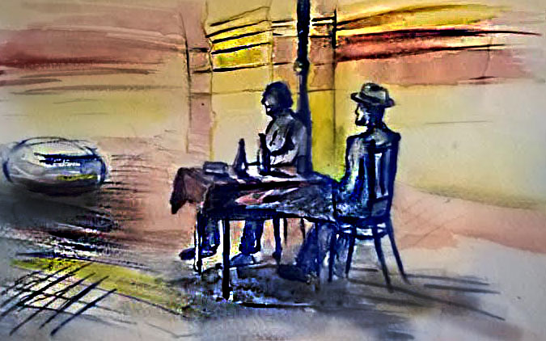

Illusztráció: Ligeti Blanka
Későre járt. A Péter-Pál templom toronyórája elütötte az éjfélt, amikor a Duna hullámain tükröződő telihold, mint a csillagok közé függesztett hatalmas lámpás, ezüst fénnyel bevilágította az óbudai Fő teret. Egy szikár, magányos alak bontakozott ki a félhomályból, a tér szélén megállt, körbenézett mintha keresne valakit, majd átvágott a macskaköveken. Az egymáshoz simuló házfalak sötét ablakai visszahangozták lépteit. A Városháza tövében elhelyezett szobornál megállt, lassan végigmérte az asztalnál ülő bronzba öntött alakot, majd halkan köhintett. A szobor kinyitotta szemét, és álmos tekintettel a jövevényre nézett.
– Csak nem maga az, Vendelin?
– Legalázatosabb szolgálatára, nagyságos uram! – biccentett a szikár alak, alig észrevehetően előrehajolt, és összecsapta a bokáját.
– Régóta vártam magát, fiam – mondta rekedtes hangon. – Mi tartott ennyi ideig?
– Tudja, nagyságos úr… – vett mély levegőt a férfi, de nem folytatta, mert a szobor lemondóan legyintett, és a mellette lévő üres székre mutatott.
– Eh, hagyja! Inkább üljön ide mellém és meséljen! Ezer éve nem találkoztunk.
– Inkább csak nyolcvan, nagyságos úr, de az is régen volt – mondta a férfi, miközben óvatosan helyet foglalt. – Talán emlékszik, az utolsó estéjén én szolgáltam fel önnek.
– Nem úgy van az, Vendelin fiam! Volt egy üveg jófajta bor is: zöldszilváni, a kedvencem.
– Igaza van nagyságodnak, tényleg volt bor, de veres. A fehér elvitelre ment.
– Oh, azok a borok! – csettintett jóízűen a szobor. – Olyan isteni nedűt csak a Mátyás-hegy oldalában termett szőlőből tudtak készíteni.
Illusztráció: Ligeti Blanka
– Legalábbis akkoriban ezt tartották – bólintott Vendelin –, de az 1880-as években a filoxéra elpusztította a tőkék nagy részét, a borászok pedig egytől egyig tönkrementek. Csupán néhány dűlő élte túl a természeti csapást az Arany-hegy tövében. Az a veres, amit a marhához ivott, jófajta Othello volt, amit a gazdám hordószámra hozatott Soltvadkertről, de ma már tilos Othellóból bort készíteni, törvény tiltja, mert hülyít.
– Na, ne mondja, és melyik bor nem? – harsogta a szobor, jobb kézzel – amit eddig a combján nyugtatott – a térdére csapott, majd megragadta az asztalon álló kancsót. – Erre inni kell! Sajnos a szobrász nem volt elég előrelátó, a látogatóknak tervezett egy üres széket, de poharat csak egyet. Véletlenül nincs magánál valami, amibe tölthetek?
Vendelin az arcán széles mosollyal egy ütött-kopott pléh bögrét húzott elő a zsebéből.
– Remek. Ha fröccsnek kéri, tehet hozzá szikvizet.
Vendelin a szódásüvegre nézett. – Ezt ma már hungaricumnak hívják.
A szobor hosszan kortyolt a pohárból, a bajszáról akkurátusan letörölte a kétoldalt leguruló cseppeket.
– Na, hogy ízlik, fiam?
– Zöldszilváni, a kedvence.
– Bizony! És ez a palack sosem fogy el – mondta széles mosollyal, miközben a poharat visszatette az asztalra, és Vendelinhez fordult. – Meséljen még! Itt a téren üldögélve csak turistákkal és járókelőkkel találkozom, azoktól pedig nem tudni meg semmit. A fiatalabbja meg sem ismer, az idősebbek pedig komolyabbnak tarják magukat ahhoz, hogy mellém üljenek. Csupán kattogtatják az idétlen fényképezőgépeiket, amivel halálra idegesítenek. Aki mégis inna velem egy kortyot, annak meg nincs pohara. Szóval, Vendelin fiam, vidítson fel, és meséljen valami érdekeset! Lehet-e még jó nyulat enni a Lippert féle vendéglőben? A Mókus utcai Kéhli, a Bécsi úti Slózi, a Göttinger vagy a Wittmann kocsma áll-e még? Amikor utoljára jártam arra, Pestről és Budáról tódult a nép a leánderes, muskátlis vendéglők kerthelyiségeibe sramlit hallgatni, beszélgetni, borozni és egy jóízűt falatozni. Mi van a régi asztaltársaságokkal? Léteznek még spóregyletek?
– Nem tudok jó hírekkel szolgálni, Szindbád nagyságos úr. Az aranykor az Ön halála után véget ért. A kockás abroszos, sramli zenés vendéglők bezártak, ma már csak mutatóban találni közülük olyat, amelyik üzemel. Hétvégenként már nem kocsikáznak vidám társaságok Óbudára, hogy önfeledten múlassák az időt. Az az élet, amit nagyságod ismer, elmúlt.
– És a szépasszonyok, velük mi van?
– Hát… – bizonytalanodott el Vendelin hangja –, ők az emlékeinkben élnek.
– Az lehetetlen! – vágta rá a szobor, és meglepetten bámult maga elé.
– Setétke, Imola, Fáni, Fanni, Fruzsina, az aranymívesné, Florentin, Paula és Passziánsz – sorolta lassan Szindbád. – Olyan nincs, hogy ők nem léteznek.
– Pedig igaz. Hát nem emlékszik?
– Mire gondol?
– Egyeseknek bánatot okozott, másoknak szenvedést, de voltak asszonyok, akik belepusztultak, mert ismerték magát.
– Ez nem igaz! – csattant fel Szindbád.
– A legnagyobb tisztelettel uram, de ellent kell mondjak. Maga egész életében a kalandot kereste. Minden hódítása csak skalp volt a gyűjteményébe. Se több, se kevesebb. De tudja mi az érdekes? Irigylem érte. Én is ilyen szerettem volna lenni: sármőr, aranyifjú, szépasszonyok kegyeltje, aki behízelgő modorával elcsavarja a fehérnép fejét. A példaképem volt, igazi Don Juan, ha úgy tetszik az óbudai Casanova.
Illusztráció: Ligeti Blanka
Szindbád döbbenten nézett a mellette ülő férfira, egy pillanatig nem tudott megszólalni.
– Lehet, hogy meglepi, fiam, de mindegyiket szerettem a magam módján, akkor is, ha a félhomályban szerelmes szavakat suttogva a karomban tartottam őket, és akkor is, amikor jogos felháborodásuknak hangot adva, néhány kíméletlen pofon kíséretében visszautasítottak. A kitüntető címet pedig köszönöm, de nem élnék vele, inkább úgy maradjak meg az emberek emlékezetében, mint Szindbád, az utazó. – A szobor köszöntésre emelte poharát. – Igyunk hát a nőkre, az örök titok szépasszonyokra!
Vendelin követte Szindbád mozdulatait, kortyolt a zöldszilvániból, majd csodálkozva megfordult, a háta mögül nevetés hallatszott. A Zichy-kastély sarkán, a csillogó holdfényben kezüket a szájuk elé kapva, négy bronzba öntött lány kuncogott önfeledten.
– Látja? Mindig ezt csinálják, ha a szerelemről beszélek, pedig a szívük mélyén ők is erre vágynak.
– Kik ezek?
– Sorstársaim: az esernyős lányok. Egy ilyen szép holdsütötte nyári éjszakán azonban nincs szükség esernyőkre, azokat a lámpaoszlophoz támasztották.
Ennek ellenére a turisták és a járókelők imádják őket, sőt az ifjú arák és a vőlegények a szobrok között pózolva dobják fel az esküvői albumukat.
Vendelin csodálkozással vegyes kíváncsisággal fordult vissza.
– Mielőtt megkérdezné: nem, nem volt közöm hozzájuk, egyrészt, mert nem érnek rá, másrészt én csak a tisztességes, jól szituált szépasszonyokat szerettem. Ezek a lányok, ha egyszer-egyszer szóba elegyedünk, mindig kinevetnek. Nézze meg, most is mit csinálnak, az esőkabátjaikat maguk mögött hagyva, hanyatt homlok rohannak a Dunára fürödni!
Az egyetlen társaságom a Fő tér másik oldalán, a Harrer utca sarkán álló polgármester. Vele szót lehet érteni, néha elbeszélgetünk, de őt is inkább a politika érdekli. Most is maga elé mormogva, valami jegyzőkönyvet bújik – mutatott a távolban álló szoborra.
A szél felerősödött és egy felhőt kergetett át a hold előtt. A Péter-Pál templom toronyórája újra megszólalt, hangját messzire sodorta a szél.
– Sajnos, nem maradhatok tovább, nagyságos úr. – Vendelin feszült arccal felállt, kiitta a poharát, és a zsebébe süllyesztette.
– Hova siet? Még csak most érkezett – marasztalta Szindbád.
– Amint lehet, újra meglátogatom.
– Rendben van, a szaván fogom. Jöjjön el máskor is, mi minden holdtöltekor itt vagyunk!
Vendelin biccentett, az ezüst fényben fürdő téren átvágott a Szentháromság szobor felé, magas, szikár alakját hamarosan elnyelte a sötétség. Szindbád körbenézett a kihalt téren, majd magasba emelt kézzel integetni kezdett.
Illusztráció: Ligeti Blanka
– Jöjjön, polgármester úr, a vendégem elment!
A Harrer utca sarkán álló szobor felemelte tekintetét a kezében tartott könyvből, ellenőrizte, tiszta-e a levegő, és mivel mindent rendben talált, lelépett a talapzatról. A talapzat oldalán nyíló titkos üreg mélyéről egy bronz poharat vett elő, a könyvet a helyébe tette, majd öles léptekkel Szindbád asztalához ment, és nagyot nyögve leült.
– Hoztam a dugi poharat – mondta széles mosollyal. – Ha nem bánja, ma fröccsöt kérek, kissé megszomjaztam a napon. Fárasztó ez a folytonos álldogálás. Ez ki volt? – kérdezte a távozó alak után biccentve.
– Csak egy emlék a múltból, a Kéhli vendéglő pincére. Az ő neje volt Passziánsz.
– Akiről annyit mesélt? – érdeklődött csillogó szemmel a polgármester. – A lóversenypálya felügyelőjének a lánya, aki megszökött egy férfival, és kasszírnő lett Debrecenben?
– Bizony! Ez a nő Pesten még Vendelin felesége volt, én csak Debrecenben vettem el. Tudja, Passziánsz igazi démon volt, akiért – azt mondják – érdemes pokolra jutni.
– Teringettét, Krúdy! Maga nagy kurafi!
Szindbád a szeme sarkában huncut mosollyal és magasba emelt pohárral fogadta az elismerést.
– Ez meg mit jelent? – vonta fel a szemöldökét a polgármester.
– A megfejtést magára bízom, drága barátom, de vegye figyelembe, íróember volnék vagy mifene, akinek az a dolga, hogy minden körülmények között igyekezzen igazat hazudni. Csak az író tudja, teremtményében mennyi a saját és mennyi mások tapasztalata. Az olvasó nem is sejti, hol a határ igazság és hazugság között, az ő dolga csak annyi, hogy élvezze a történetet. Tessék, próbálja ki! A jegyzőkönyve helyett inkább olvassa el azt a Márai-kötetet – mutatott az asztalon heverő, bronzba öntött könyvre –, ugyan rólam szól, de nem fogja kitalálni, mi belőle az igazság.
– Krúdy, Krúdy, maga sose javul!
– Ha megengedi, ezt újabb bóknak veszem.
– Veheti is, de itt az ideje, hogy játsszunk, lassan felkel a nap – a polgármester a mellényzsebéből egy pakli kártyát húzott elő. – Legutóbb nyertem, most én emelek, és maga oszt. Öt lapot kérek! – ezzel a paklit az asztalra helyezte és emelt. Szindbád, mielőtt a kártyát a kezébe vette – mint egy igazi szerencsejátékos –, megropogtatta az ujjait, és keverni kezdett.
A telihold, ahogy ősidők óta, aznap éjjel újra végigrótta útját az égbolton, és a Polgár utca tízemeletes házai fölött eltűnt a Fő tér lakóinak szeme elől. Mire a Hajógyári-sziget fái fölött a hajnal első sugarai vörösre festették az eget, az élet visszatért a régi kerékvágásba. Harrer polgármester – mintha valaki megzavarta volna –, szigorú tekintettel nézett fel az 1872. esztendő testületi üléseinek jegyzőkönyvéből. A Laktanya utca sarkán álló lányok kendőt kötöttek, és az esőkabátjukat szorosan összefogva dideregtek az esernyőik alatt. Szindbád mosolyogva, kissé másnaposan támaszkodott az asztalnak, várta, hogy megérkezzenek az első járókelők, és leüljön mellé valaki, hogy társasága legyen. Azt sem bánta volna, ha a nyakát átkarolva az ölébe ülnek, vagy lefényképezik, ahogy napjában annyiszor. Ennél jobban csak egy dologra vágyott – a következő holdtöltére.